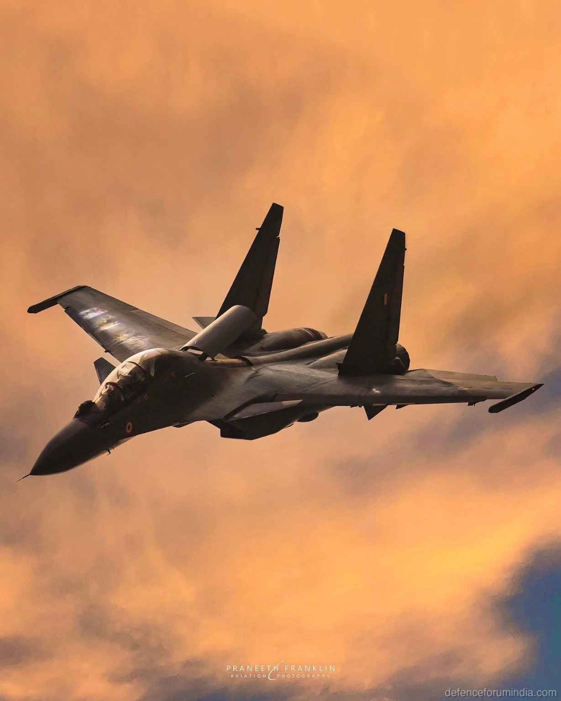

Aircraft type
The Su-30MKI is a twin-engine, twin-seat multirole fighter aircraft designed for air-combat and strike missions.
My interest in defence and military aviation comes from my fascination with the technology, engineering, and capabilities behind modern combat aircraft. I am particularly interested in aircraft design, aerodynamics, manoeuvrability, propulsion, and the technological systems behind modern fighter aircraft.

The Sukhoi Su-30MKI is my favourite aircraft. I am particularly drawn to its agile airframe, exceptional manoeuvrability, and thrust-vectoring capability.
The Su-30MKI is a twin-engine, twin-seat multirole fighter aircraft designed for air-combat and strike missions.
Its blended airframe, canards, and aerodynamic control surfaces help it remain controllable across demanding flight conditions.
As a multirole fighter, it is intended to support both air-to-air and air-to-ground operations rather than a single mission type.
The Su-30MKI forms an important part of the Indian Air Force fighter fleet and represents a major Indian combat-aviation capability.
Its avionics suite integrates radar, sensors, communications, and mission systems to support detection, identification, navigation, and situational awareness.
Its multirole design supports air-to-air combat as well as air-to-ground missions, with the aircraft and its systems coordinating information for each role.
How the aircraft's configuration contributes to control and agility.
Canards are small lifting and control surfaces positioned ahead of the main wing. Along with the aircraft's aerodynamic layout and control system, they can help manage pitch and airflow during manoeuvres. At high angles of attack, the aircraft is operating with its nose raised significantly relative to the oncoming airflow, making control and energy management especially important.
Thrust-vectoring adds another control influence by directing engine thrust away from a fixed straight-ahead line. Used with aerodynamic controls, it can improve pitch authority and help the aircraft remain controllable during certain high-angle-of-attack manoeuvres.
The Su-30MKI uses a twin-engine configuration. Two engines provide the thrust required for a large multirole fighter and add an important layer of redundancy. Thrust-vectoring can direct engine exhaust to supplement the aircraft's aerodynamic controls, improving manoeuvrability and control in selected parts of the flight envelope.
Radar and other sensors help the crew build an understanding of the surrounding airspace. Avionics combine those inputs with navigation, communications, identification, and flight information to support situational awareness. In broad terms, the aircraft's systems support both air-to-air capability against airborne targets and air-to-ground capability against surface targets, without reducing either mission to a single component.
The Cobra manoeuvre is a dramatic high-angle-of-attack manoeuvre in which the aircraft rapidly raises its nose while maintaining forward motion, then returns to a more normal attitude. It demonstrates extreme pitch authority and controllability. On an aircraft such as the Su-30MKI, thrust-vectoring can support this kind of manoeuvre by helping produce pitch control when conventional aerodynamic surfaces become less effective. This is an aircraft capability I find fascinating, not a claim of personal flight experience.